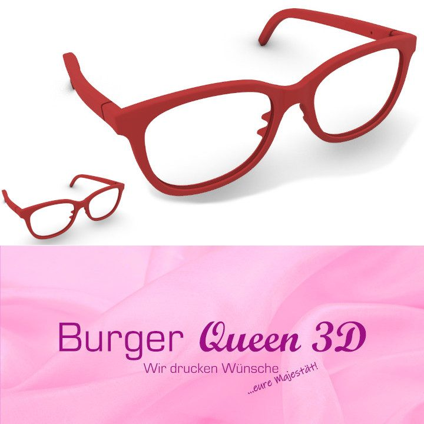

Brillengläser
Individuell in Wien angefertigt: Vor-Ort-Präzisions-Schliff vom Rohglas zum Präzisionsglas, punktgenau zentriert.
Brillen · Gläser · Kontaktlinsen
Erst messen, dann fertigen: Brillengläser schleifen wir vor Ort vom Rohglas zum Präzisionsglas und zentrieren sie punktgenau – Kontaktlinsen passen wir nach Tragegefühl und Messwerten an.
Von optischen Brillen über Sonnenbrillen bis zu Sportbrillen – bei unserer großen Auswahl an Markenprodukten finden Sie genau die Brille, die zu Ihnen passt. Wir beraten Sie gerne.
EyeDrive-Einstärkenbrille inkl. Präzisions-Zentrierung ab € 350 EyeDrive-Gleitsichtbrille inkl. Präzisions-Zentrierung ab € 656 Blaulicht-Schutz-Fertigbrille ab € 49

„Burger Queen“ – 3D-gedruckte Brille, Motiv der bestehenden Website.
Welche Glastypen wir führen – und wofür sie gedacht sind.
Individuell in Wien angefertigt: Vor-Ort-Präzisions-Schliff vom Rohglas zum Präzisionsglas, punktgenau zentriert.
Eine eigene Glaskategorie in unserem Sortiment – wir zeigen Ihnen im Beratungsgespräch, für welche Sehaufgaben sie gedacht sind.
Für alle, bei denen die Arme zu kurz werden. Die EyeDrive-Gleitsichtgläser bringen weniger Ermüdung und weniger Kopfbewegung.
Für Menschen, die den ganzen Tag zwischen Displays wechseln – abgestimmt auf Arbeitsabstand und Körperhaltung.
Als optische Brille mit Filter oder als Fertigbrille ohne Sehstärke ab € 49
Die Fassung passt noch? Dann bekommt Ihre bestehende Brille neue Gläser.
Verlassen Sie sich beim Anpassen auf unser jahrelanges Know-how und Ihr persönliches Tragegefühl. Am besten gleich ausprobieren.
Passform, Sitzverhalten und Verträglichkeit werden gemessen und kontrolliert – nicht geschätzt.
Vom Tages- bis zum Monatssystem: Wir wählen den Typ nach Ihrem Alltag und Ihren Augen aus.
Auch in der Nähe scharf sehen – ohne Lesebrille über der Kontaktlinse.
Formstabile Linsen, die nachts getragen werden. Wir messen, ob das für Sie in Frage kommt.
Kontaktlinsen mit etabliertem Wirkstoff gegen trockene Augen – Wohlfühlen für den ganzen Tag statt für Minuten.
Ein rezeptfreies Angebot aus unserem Kontaktlinsen-Sortiment – Details besprechen wir im Geschäft.
Biokompatible Pflegemittel, abgestimmt auf Material und Tränenfilm. Wir beurteilen auch Ihr aktuelles Mittel.
Die Abrechnung ist mit allen Kassen möglich.
Wenn der Arzt sagt „Da kann man nichts mehr machen“, heißt das nur: medizinisch nichts mehr. Optisch gibt es noch viel mehr als eine stärkere Brille.
Lupe ist jedoch nicht gleich Lupe: Blickfeld, Arbeitsabstand, Vergrößerung und Handhabung entscheiden, ob die Lupe in der Lade verschwindet oder wirklich verwendet wird. Die eine hält man knapp über den Text, die andere muss auf dem Text liegen, die dritte knapp vor das Auge. Vielleicht ist auch die Lupenbrille das Mittel der Wahl – oder eine elektronische Lupe, oder doch eine stärkere Brille.
Rund oder eckig – für das Kleingedruckte zwischendurch.
Fürs Lesen und Studium, fürs Lesen und Schreiben, fürs Kreuzworträtsel – und mit kontraststeigerndem Licht.
Beide Hände frei: die Vergrößerung sitzt direkt vor dem Auge.
Elektronische Vergrößerung mit einstellbarem Kontrast – Einschulung inklusive.
Mehr Kontrast durch das richtige Licht – oft der einfachste Hebel beim Lesen.
Intensives Vorgespräch, ausführliche Messung, Vergleich von Lupenbrillen und Bildschirm-Lesegeräten. Sie werden staunen, was Sie wieder alles sehen können.
Anpassen, Richten, Kontrollieren: Ihre Brille soll auch nach Monaten noch sitzen wie am ersten Tag.
Auf Wunsch versichern wir Ihre neue Brille – wir erklären Ihnen die Bedingungen im Geschäft.
Welche Fassung zu Gesicht, Haut- und Haarton passt – wir schauen gemeinsam.
Damit die Präzisionsgläser auch sauber bleiben.
Nachhaltig und günstiger als eine komplette Neuanschaffung.
Bei Kontaktlinsen ist die Abrechnung mit allen Kassen möglich.